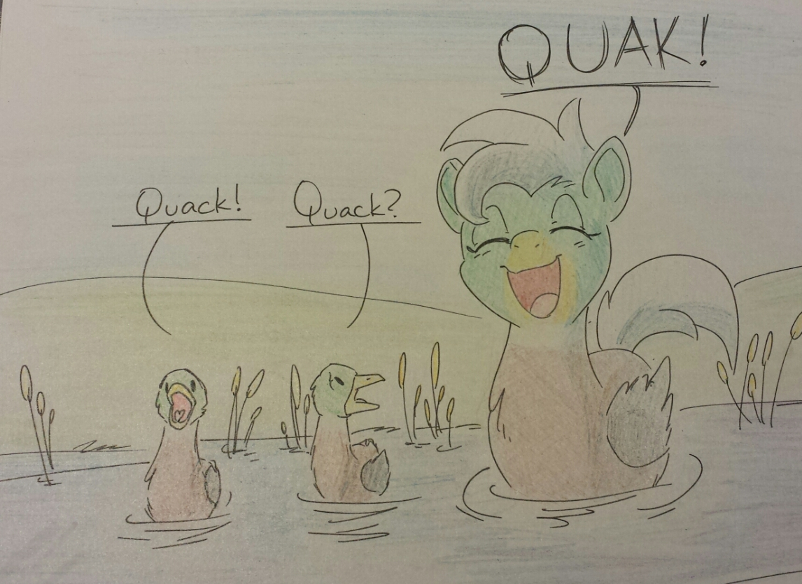

Reward Teirs
Patreon is set up so those who wish to support the work of a person or organization. It gives a list of amounts that can be pledged to a content creator, and in turn, they can recieve perks from that creator, and also help in providing funding toward their craft. Me being a content creator alongside many others, have made a Patreon for fans to support me making the music and art that I do.
Spiral Harmonies's Patreon Page
Below are a list of teirs and the perks that come with pledging an amount to help me out monthly.
Become a Patron!
Decoy Duk ($1)
Pledging $1 will get you access to voting on any future things that I make, as well as access to orchestration updates (through google drive) on progress on how the music I am currently making is progressing. Sometimes it is fun to listen to how something is coming along!
(Call it a sneak-peek, if you will)
Quak ($5)
This teir, along with all previous rewards, will get you any MP3's you would like of any of my orchestrations and a shoutout in any future video posts I make that features Patreon-Funded projects.
Duklet ($10)
This teir rewards patrons with high-quality .wav files of any of orchestrations that I make along with EVERY previous reward teir.
Creative Duklet ($20)
This teir is for those who wish to really get behind what I do, as well as learn how to make projects themselves. In this one, patrons recieve Midi files of any orchestrations they would like for reference (Typically used for re-arragments or the like), exported wav part files of any one orchestration (every single seperated parts like strings, brass, ect. all in a zip file for download), critiques or tips on getting started in orchestration through Skype or email, and every reward teir below.
Duk's Right-Hand Man ($50)
If you choose to support me on this teir, patrons will recieve a personalized video thank-you message from yours truly, a small 5-15 second personalized youtube intro theme (If continued support on this level, this can be repeated every 2 months), and of course, all previous reward teirs.
Mary-Sue Duk ($100)
If you choose to support me on this level, first off, you are awesomesauce! Patrons that support at this level will be rewarded all previous teir rewards, and up to a 2 minute orchestration request (So long as it is orchestral. Details confirmed through Skype. Essentially a commission). On top of that, if you continue to support me at this level, this reward can be repeated every 4 months!
Become a Patron!
Why Support Me?
All of my music and art that I do I invest in mostly out-of-pocket. With the community's help, pledging an amount to my patreon monthly helps me pay for the virtual instruments I pay for each month, and helps fund the equipment I use in my collaborations, and project for fans.
Become a Patron!
